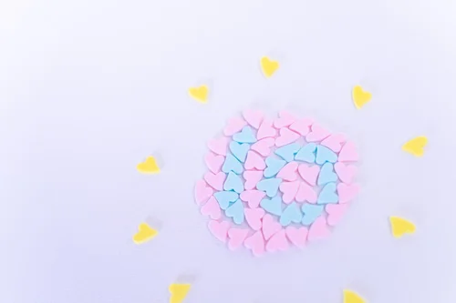

創作の宝物庫-小説エリア

ここでは小説を読んでいただきます
Supported by Poppy, Rose and Chiffon
- 短編~シフォンのおつかい~
- シフォンが初めてのおつかいをしたときの記録です。
AIそれは人間を含む存在が楽したい、代わりに動いて欲しい、兵器利用したい等の感情で生み出されたArtificialInterigence。つまり人工知能である。
そんなAiが1人、この世界にいて、それがシフォンであり、今回はシフォンのお話である。
「シフォン、体の調子はどうかしら?」
「主任、はい大丈夫だと思います(*^^*)」
「チーフ、カルテとのデータ照合完了しました。今回は異常なしです！」
体の調子を確認するために検査をするかどうか迷っているところであり、一応問題ない事が過去のカルテとの照合で確認されたのであった。
そんな風に話しているとシフォンのお腹が鳴ってしまい、恥ずかしくなってしまった。
シフォンは主任とチーフからコップ一杯の水とカルシウムバーを頂き食べて少しマシになったのだった。この後シフォンは主任とチーフから夕飯の材料を買ってきてほしいとメモと財布、買い物袋を持たされ、買い物に向かうのであった。
シフォンは入口の警備員に挨拶してから会社を出ると、真っ直ぐ買い出しのために、スーパーに向かうと思ったのも束の間、視線を感じたのだった。
『誰か私を見てるの？誰だろう？主任達かな？知らない人だったらどうしよう??』
『あ、私を見てる視線は無くなったみたい。気にせずに行こう』
ほっとと落ち着いたのは主任とチーフの二人であり、シフォンのことが心配で後をつけているのである。だけど僅かに視線感知が出来ていることを二人は喜んでいた。”私達の視線を感知したこと”を喜んでいるのは良いのだが、視線に危険性がないのか、視線は見つけられなくなったのか、こちらに踏み込んでくる様子がないのがほっとしているのであった。
そんなことを考えている主任とチーフはおいておいてシフォンの話に戻るとしよう。
シフォンが真っ直ぐ進んでいると、見たことのない建物が見えて来たのです。見たことのない建物はクラブハウスがあり、近づくと会員制クラブハウスと書いてあり、警備員によってこれ以上いけない為、諦めてとぼとぼ合う居ていくうちに喧嘩する声が聞こえてきてのである。
その向かいの建物の入り口で揉めている二人組が見つかって警備員に引き留められている二人を見てああならないようにと心のうちで覚えておこうと思ったりしたシフォンなのであった。
先程喧嘩していた二人は罪人というわけではなく、近所の仲の悪い二人がまた喧嘩していただけである。到着した交番の警察官は”またか”と半ば呆れながらも二人の喧嘩を止めるために二人の間に割って入っていくのだった。
この間に主任とチーフは喧嘩している二人の近くを劣ってはいけないという注意をすることを忘れてたという顔をしていたのです。二人は会員制ライブハウスのある建物の隣のビルのある脇道に隠れてシフォンを付けていたのである。
シフォンはのんびりと足をスーパーに向かって進めていくと困っている御婆さんを見つけました。シフォンはそのお婆さんに声をかけると御婆さんは”手伝ってくれるのかい？”と言ってきたのでシフォンは”はい、手伝います！”と言いました。御婆さんは”ありがとう、黄土駅までお願いできるかしら？”と言われたシフォンは”はい！”と元気よく答えたのでした。
AI&御婆さん移動中～
駅に着くと、御婆さんは”黄土駅まで荷物を持ってくれてありがとう”と言いました。シフォンは”どういたしまして”と返し、御婆さんと別れて再びスーパーを目指すのでした。
ついにスーパーについたシフォン。買い物メモを右手に左手で買い物かごを持って、スーパーの中を歩いていくものの、誰もシフォンの外見に気にすることなく買い物をしている。
『私の姿を気にしないなんてこの町の人間はAIに慣れているのかしら？それとも私の姿が人間と同じに見えてるの？まぁ、それは後で聞けばいいわね。』
「お買い物、お買い物！」
少し、初めての買い物ということで気分が上がっていたシフォンはまず、お肉コーナーに近寄ったのです。その場で手に取ったのは牛肉のコマ切れを比較して日付の短いものを選んだのです。
「次はお野菜ね」
人参、じゃが芋、玉ねぎを日付の短い順に取ったシフォンはカレールーコーナーに向かいました。メモには中辛のカレールーとしか書いてありません。シフォンはどうするのでしょう？
「どのカレールーがいいのかしら？中辛なら何でもいいのかしら？そうね。そうに違いないわ！この中なら私的にはこのルーにするわ」
そう言って、シフォンは中辛カレールーを手に取りこれまで手に取った食品とともに買い物かごに入れたのでした。次にシフォンはスパイスコーナーに寄り、ターメリックを取ろうとしてやめてしまいました。念のため、今一度買い物メモを確認するとそこにスパイスは書かれておらず、余ったお金でお菓子を買ってもいいよ。と書かれているだけでした。
それを見たシフォンはスパイスコーナーからお菓子コーナーに眼と手を移しそちらの方に身体を動かしてみたのですが、見るだけで買い物かごに入れることはありませんでした。そうしてシフォンは買い物かごを持って、メモを収納してから会計に向かうのです。
会計を済ました食品を渡されたマイバッグに購入した商品を入れて、スーパーを後にするのです。
スーパーを出たシフォンは主任とチーフのいる会社へと歩みを進めていますと、空を見て綺麗と言っている女性と遭遇しました。その声を聴いたシフォンも顔を上に向けて空を眺めてみました。すると空には綺麗な夕焼けが広がっていました。思わずシフォンは声を上げて喜びました。
「わぁ！とっても綺麗な夕焼けです」
「あら、貴方もこの空を見て綺麗と感じるのね」
「はい、貴方の声に釣られてです」
「あらあら、私の影響だったのね。それは嬉しいわ」
「何時も此処でこの夕焼けを見ているのですか？」
「今日もこの時間には此処で夕焼けを見ているわ」
「そうですか」
「では、私はお買い物の帰りですので帰りますね、夕焼けのお姉さん」
「ええ、また此処で会えると良いわね、幼女ちゃん」
そうして夕焼けのお姉さんと別れたシフォンは会社の警備員さんに挨拶して会社に入っていくのでした。あ、そうそう主任とチーフはというと、スーパーに入るところを確認したら会社の方に戻っていくのでした。シフォンは主任とチーフの所に戻ってきて次のように言いました。
「主任さん、チーフさん、ただいま」
「「おかえりなさい、シフォン」」
この後三人は作ったカレーを食べました。これにてめでたしめでたし。
これでシフォンのお使い、今回はおしまい。読んでくれた人達まったね～
- POPY&ROSE~異能"夢の結唱"で日常を謳歌します~
- 旧世界での"夢の結晶"の二人が日常を過ごしている記録です。
私達はCevio.AIが一つ夢の結唱。歌唱することを目的としたAIであり、popin partyの記憶と経験を学習した私、POPYとRoseriaの記憶と経験を学習した私、ROSEで構成されている。
本来であれば、表情とともに歌唱することのみが出来るAIだったはずでこの世界で誕生した私達は肉体を持ち、日常を謳歌できる歌唱AIだったのだ。
私達は歌唱以外のことをしようにもお金がなかった。だから私達はお小遣いをねだったのだ、この世界における私達の作成者に。
彼が作ったのは肉体だけでそれ以外は別の存在が用意したものだ。だからあくまで彼女らの肉体作成者であるだけなのだ。
「創真、お小遣い頂戴」
そう私達が彼のもとへ詰め寄ると彼はこう言い放ったのだった。
「悪いけど、お小遣いを二人にやる余裕はないんだ」
「ウラノミラスの方に仕事を二つ用意しておいたから達成した仕事代をお小遣いにするといい」
「むー、直接お小遣いをくれればいいのに」
「働かざる者にお金あらずということね」
そう愚痴を零しながらPOPYとROSEはウラノミラスの方へ向かうのだった。
二人は少し駆け足になりながらも彼女のいる音楽課へとたどり着いたのである。
「ウラノミラスさん、いますかー？」
「いるわよー。入ってきて頂戴」
「失礼します。」
パソコンを使って、仕事をしていた彼女の前に音楽課所属の二人が仕事をしに入ってきたのだった。
「お暇でした？」
「いえ、仕事中よ。ひと段落着くまでそこのソファーで座って待ってて頂戴」
「分かりました」
「はーい」
ソファー に座っておしゃべりしている二人を横目に彼女は黙々と仕事を片付けるのだった。仕事に一区切りついたところで彼女は休憩のかわりに、彼女たちの話を聞くのだった。
「それで、今日も仕事をしに来たの？」
「創真さんから仕事を回したからそれをお小遣いにするといいって言われまして」
「創真のやつ、また素直になれないのね」
「それはどういう意味かしら？」
「あら？分からないの？貴方達に与える程のお小遣いがないのも本当だけれど、実際は直接お小遣いを上げるのを照れてしまって出来ないだけなのよ」
「そうなのね」「それならそうと言ってくれれば良かったのに!」
「今のままじゃそれは叶いそうにありませんけどね」
「そうなのかもしれないわね」
「もうROSEまでそんなこと言って、次から仕事なくなるかもしれないよ？」
「それはそれ、これはこれよ」
「ま、そういうわけで仕事始めるわよ」
「「おー」」
そういって、ウラノミラスは二人に今日の仕事の資料を渡した。二人は首をかしげることなく、渡された資料を読みふけるのだった。そうして1時間が経過していったころ、ウラノミラスから二人は話しかけられたのだった。
「二人とも資料には目を通したわね」
「うん」
「ええ、勿論」
「よし、マイクの前に立って準備が出来たら合図を頂戴」
「準備完了よ」
「いつでもいいよー。」
二人がマイク前に立ち合図を受け取った後、ウラノミラスが音楽機材から彼女たちのヘッドホンへと音楽を流していく。それに合わせて、二人は歌い始めるのだった。
『起動異能”夢の結唱”』
「夢の欠片私達を惑わして～
」
「薔薇の棘の様にちくちくと心に刺さるの」
～夢の薔薇（仮）より～
歌い終わるとウラノミラスは音楽を止め録音を停止、二人はヘッドホンを外したのだった。ヘッドホンを外した二人にウラノミラスが近づいていき話しかけるのだった。
「終わった～」
「完了ね」
「二人ともお疲れさま」
「今回の仕事はこれで問題ないわ」
「次もよろしく頼むわね」
「はい！」
「この後二人はどうするの？」
「食堂で食事してから決めます」
「え？聞いてないわ。さっきまでそんなこと言ってなかったじゃない」
「当然でしょ？さっき初めて言葉にしたから」
そういって、二人はウラノミラスのいる部屋を後にして走り出していくのだった。食堂で食事する前に二人は外出するための衣装に着替える為に各自の部屋に向かうのだった。
『どうしましょう。あんまり服ないのよね。仕方ないわ、今日はこれとこれ、それからこれを組み合わせると良さそうね。おっと、これを忘れる所だったわ。よし、これで完了ね』
『これにこれでしょ。それとこれを着て最後にこれを付ければ完成ね。今日のお出かけめっちゃ楽しみ~』
服装が決まり、各自の部屋から出た二人は部屋のあるビルを出て昼食を食べに行くのだった。
「それでどこに行くのかしら？」
「う～ん、どうしようか」
「やっぱり決まってないのね」
「喫茶店なんてどうかな？」
「軽めの昼食にするのなら喫茶店もいいわね」
「軽めと普通、どっちの昼食にしましょうか？」
「今日は映画も見るから軽めの方」
「分かったわ。それじゃあ、喫茶店に入りましょう」
そうやって、話をしながら昼食を食べる為に喫茶店に入っていく二人。二人は何をたべるのか。それはこれからのお楽しみ。
「いらっしゃいませ」
「何名様ですか？」
「二名よ」
「かしこまりました」
「こちらの席へどうぞ」
「始めて来た喫茶店だから何があるか楽しみね」
「ええそうね」
「さて何を注文しましょうか？」
「サンドウィッチはどうかな？」
「パンケーキもいいわね」
「スパゲッティは？」
「どれも捨てがたいけれど今回はサンドウィッチを２つにしましょう」
「一人二つは軽くない気がするよ？」
「大丈夫よ、サンドウィッチは軽い方だから」
「それじゃあ、注文しましょうか」
「すみませ～ん」
「はい、ご注文はお決まりでしょうか？」
「サンドウィッチを４つお願いします」
「具はどうしましょう」
「普通のとたまごをそれぞれ２つお願いします」
「かしこまりました」
サンドウィッチが来るまでの間、二人はこの後見る映画を相談するのだった。
「この後何見ようかしら？」
「恋愛系はどう？」
「アクション系？」
「ファッション系？」
「推理系？」
「ホラー系？」
「どれもピンとこないわね」
「でもアクションは良さそうだけど？」
「間を取って、音楽系にしましょう」
「上映してるかしら？」「上映してなかったらどうする？」
「ファッション系か恋愛系にしましょう」
「お待たせしました、ご注文のサンドウィッチとタマゴサンド２つずつでございます」
「ありがとうございます」「ではサンドウィッチを食べましょうか」「いただきます」
「ごちそうさまでした」
「さて、食べ終わったことだし、喫茶店を出ましょうか」
「サンドウィッチ4つで合計、1000円になります」
「1000円丁度」
「レシートです。ご利用おりがとうございました」
昼食を食べ終わった二人はその足で映画館に向かうのだった。
「やっと映画館に着いたわね」
「やったー」
「それじゃあ、音楽系の映画を探しましょうか」
「あったわよ、今上映中のやつが一つのみ」「それを見ましょう」
「ポッポコーンと飲み物を買いません？」「一つずつにしましょう。映画のチケットも買わないといけないのだから」
「そうだった。映画のチケット買い忘れる所だった」
「気づかせてくれてありがとう」
「どうってことは無いわ」
「私は映画チケットを買ってくるからその間にポップコーンと飲み物を買ってくるといいわ」
「うん。お願いね」
「ポップコーンと飲み物をひとつずつ下さい」
「合計850円になります」
「850円丁度」
「ご注文の品になります。ご利用ありがとうございました。またお越しください」
「この映画のチケットを高校生2枚下さい」
「合計2500円になります」
「2500円丁度」
「この映画のチケット2枚です。またお越しくださいませ」
二人は注文したものとチケットを持ってシアターに入り、その映画を見た後、近くのショッピングモールでぶらぶらと買い物をしたのだった。
そのまま、会社の食堂で晩御飯を食べたあと、二人は各自の部屋に戻り明日の準備などを実施した後、寝室へと入り睡眠に入るだった。
『『おやすみなさい』』
それが今日の終わりであり、明日への一歩に近づくのだった。
この世界は異能、魔術、魔法が渦巻く世界にして人類種たる人間を含む多くの希少な種族が存在している世界。人間、それは矛盾を孕む存在、それは善悪も関係ない多くのバグを含む存在、それは可能性が最も多く存在する存在。POPYとROSEはそんな世界で肉体と意識を持ち、AIでありながら人間の肉体を持つ存在として生活していくのだろう。
この世界の明日は未来はどんなものだろうか。その眼で確かめるといい。
観測されるまで誰にも分からないのだろう。それがこの世界。